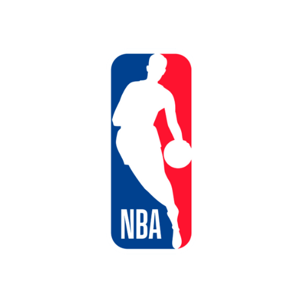

Goat Grade
An NBA analytics web app that scrapes 70 years of statistics and ranks every player and team. Rankings are exposed via a custom API.

Goat Grade is a project I started in 2021 and have kept running since. It scrapes NBA statistics with Python and BeautifulSoup, computes a custom ranking for every player and team going back to the 1956 season, and serves the data through a Flask backend. The site has correctly identified the season MVP at an 80% rate, and predicted the 2024 NBA champion. The communication side of the project came from explaining the ranking system, which I did in a blog post. This is important because as users view the rankings and use them to think about the NBA, its to be transparent how we use data to make these rankings. I am still adding to and improving the site, and am planning on releasing more blog posts explaining new additions and features. A key part of this project is the users viewing the rankings.